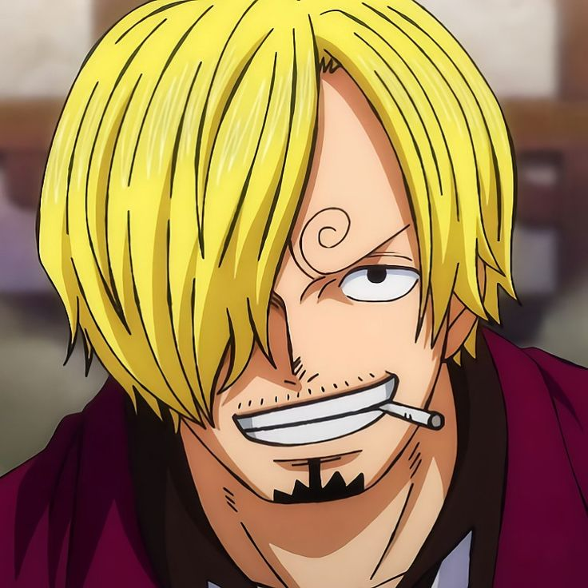

Vinsmoke Sanji
"Perna Negra" Sanji, nascido como Vinsmoke Sanji, e também é o cozinheiro dos Piratas do Chapéu de Palha, assim como um antigo chefe de cozinha do Baratie. Ele também é o terceiro filho e a quarta criança da Família Vinsmoke, tornando-o um príncipe do Reino Germa, até que ele oficialmente os renunciou duas vezes. Apesar de Sanji renunciar ao seu sobrenome Vinsmoke, o Governo Mundial o rotula como parte de seu nome em seu pôster de procurado.